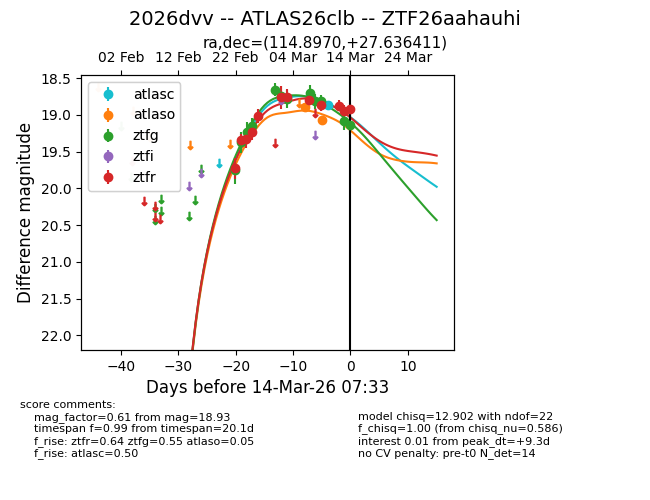
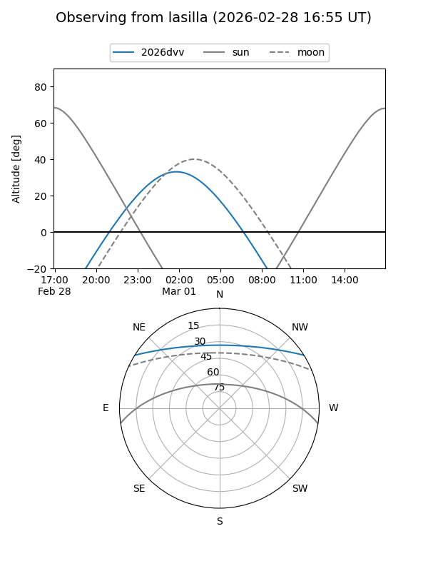
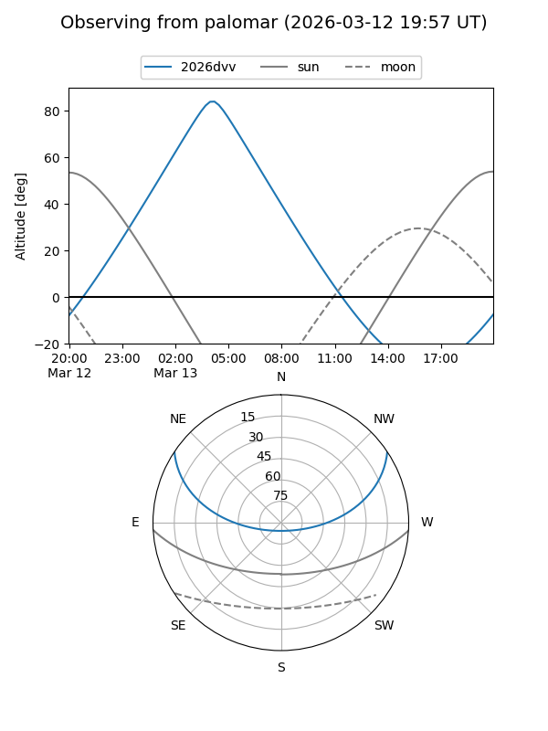
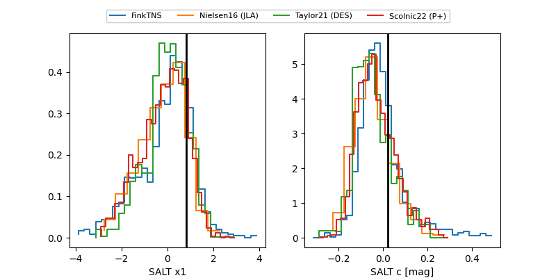

2026dvv
Target 2026dvv at 2026-03-14 07:35
Aliases and brokers:
FINK: link
Lasair: link
ALeRCE: link
TNS: link
YSE: link
alt names
ZTF26aahauhi (ztf,fink_ztf)
2026dvv (tns,yse)
ATLAS26clb (atlas)
Coordinates:
equatorial (ra, dec) = 114.8970,+27.63641
equatorial (HMS+DMS) = 07:39:35.27,+27:38:11.08
galactic (l, b) = (192.1633,+22.08269)
Flags:
Photometry:
last atlasc=18.87, atlaso=19.07, ztfg=19.14, ztfr=18.93
1 atlasc, 2 atlaso, 12 ztfg, 12 ztfr detections
Lightcurve

Visibility


Additional plots
